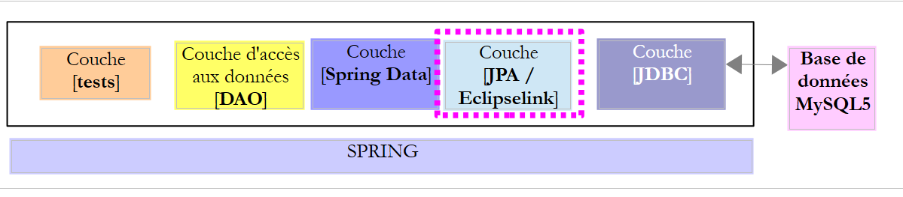
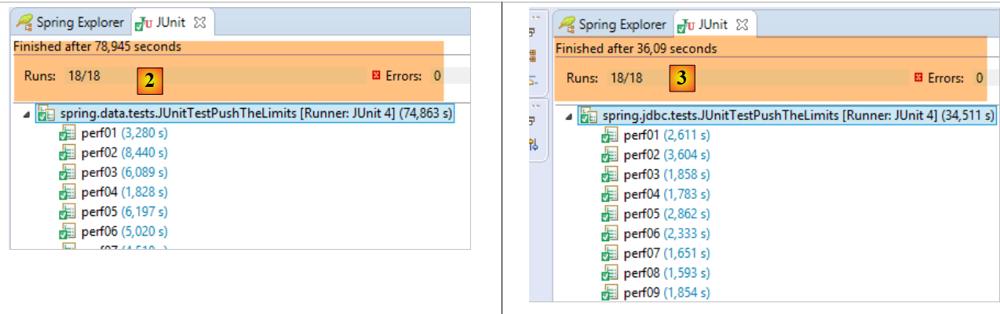

7. Spring Data JPA EclipseLink
7.1. Introducción
Retomamos la arquitectura anterior, que ahora implementamos con una capa JPA / EclipseLink.
 |
7.2. Configuración del entorno de trabajo
Con STS, descargue el proyecto [myql-config-jpa-hibernate] [1-4]:
 |
y, a continuación, importe el proyecto [mysl-config-jpa-eclipselink] [5] que se encuentra en la carpeta [<exemples>/spring-database-config/mysql/eclipse] [6]:
 |
Una vez hecho esto, reinicie el entorno Maven (Alt-F5) de todos los proyectos presentes en [Package Explorer]:
 |
A continuación, para comprobar el entorno de trabajo, ejecute la configuración de ejecución denominada [spring-jpa-generic-JUnitTestDao-hibernate-eclipselink]:
 |
Esta configuración ejecuta la prueba [JUnitTestDao]. Esta prueba debe completarse con éxito:
 |
7.3. El proyecto de configuración de la capa JPA
 |
Este proyecto tiene como función configurar la capa JPA de la arquitectura que se muestra a continuación:
 |
7.3.1. Configuración de Maven
El proyecto es un proyecto Maven y está configurado mediante el siguiente archivo [pom.xml]:
<project xsi:schemaLocation="http://maven.apache.org/POM/4.0.0 http://maven.apache.org/xsd/maven-4.0.0.xsd"
xmlns="http://maven.apache.org/POM/4.0.0" xmlns:xsi="http://www.w3.org/2001/XMLSchema-instance">
<modelVersion>4.0.0</modelVersion>
<groupId>dvp.spring.database</groupId>
<artifactId>generic-config-jpa</artifactId>
<version>0.0.1-SNAPSHOT</version>
<name>configuration mysql openjpa</name>
<parent>
<groupId>org.springframework.boot</groupId>
<artifactId>spring-boot-starter-parent</artifactId>
<version>1.2.3.RELEASE</version>
</parent>
<dependencies>
<!-- dependencias variables ********************************************** -->
<!-- JPA proveedor -->
<dependency>
<groupId>org.eclipse.persistence</groupId>
<artifactId>eclipselink</artifactId>
<version>2.6.0</version>
</dependency>
<!-- dependencias constantes ********************************************** -->
<!-- Spring Data -->
<dependency>
<groupId>org.springframework.data</groupId>
<artifactId>spring-data-jpa</artifactId>
</dependency>
<!-- configuración heredada JDBC -->
<dependency>
<groupId>dvp.spring.database</groupId>
<artifactId>generic-config-jdbc</artifactId>
<version>0.0.1-SNAPSHOT</version>
<exclusions>
<exclusion>
<groupId>org.springframework.boot</groupId>
<artifactId>spring-boot-starter-jdbc</artifactId>
</exclusion>
</exclusions>
</dependency>
</dependencies>
<properties>
<project.build.sourceEncoding>UTF-8</project.build.sourceEncoding>
<java.version>1.7</java.version>
</properties>
<build>
<plugins>
<!-- [https://flexguse.wordpress.com/2013/08/10/maven-spring-data-jpa-eclipselink-and-static-weaving/] -->
<plugin>
<groupId>org.apache.maven.plugins</groupId>
<artifactId>maven-surefire-plugin</artifactId>
<version>2.18.1</version>
</plugin>
<!-- Este complemento garantiza el entrelazado estático EclipseLink -->
<plugin>
<artifactId>staticweave-maven-plugin</artifactId>
<groupId>de.empulse.eclipselink</groupId>
<version>1.0.0</version>
<executions>
<execution>
<goals>
<goal>weave</goal>
</goals>
<phase>process-classes</phase>
<configuration>
<logLevel>ALL</logLevel>
<!-- <includeProjectClasspath>true</includeProjectClasspath> -->
</configuration>
</execution>
</executions>
<dependencies>
<dependency>
<groupId>org.eclipse.persistence</groupId>
<artifactId>eclipselink</artifactId>
<version>2.6.0</version>
</dependency>
</dependencies>
</plugin>
</plugins>
<pluginManagement>
<plugins>
<!--La configuración de este complemento se utiliza únicamente para almacenar los ajustes de Eclipse m2e. No influye en la compilación de Maven en sí. -->
<plugin>
<groupId>org.eclipse.m2e</groupId>
<artifactId>lifecycle-mapping</artifactId>
<version>1.0.0</version>
<configuration>
<lifecycleMappingMetadata>
<pluginExecutions>
<pluginExecution>
<pluginExecutionFilter>
<groupId>
de.empulse.eclipselink
</groupId>
<artifactId>
staticweave-maven-plugin
</artifactId>
<versionRange>
[1.0.0,)
</versionRange>
<goals>
<goal>weave</goal>
</goals>
</pluginExecutionFilter>
<action>
<execute>
<runOnIncremental>true</runOnIncremental>
</execute>
</action>
</pluginExecution>
</pluginExecutions>
</lifecycleMappingMetadata>
</configuration>
</plugin>
</plugins>
</pluginManagement>
</build>
</project>
- líneas 5-7: el artefacto Maven generado por este proyecto. Es el mismo que el del proyecto [mysql-config-jpa-hibernate]. Esto significa que solo uno de estos proyectos puede estar activo en un momento dado;
- líneas 10-14: el proyecto Maven principal que define la mayoría de las dependencias necesarias para el proyecto version;
- líneas 19-22: la biblioteca EclipseLink;
- líneas 26-29: la biblioteca Spring Data;
- líneas 32-34: el proyecto de configuración de la capa JPA se basa en el de configuración de la capa JDBC, que define, entre otras cosas, el controlador JDBC del SGBD utilizado y las coordenadas de la base de datos que se va a utilizar;
- líneas 35-40: el proyecto de configuración de la capa JDBC incluye la biblioteca [Spring JDBC], que aquí se sustituye por la biblioteca [Spring Data JPA]. Por lo tanto, se indica que no se incluya en las dependencias del proyecto. No obstante, si se mantiene, esto no provoca errores;
- El complemento de las líneas 58-81 implementa el «weaving» de las entidades JPA. Lo que en inglés se denomina «weaving» es la transformación (el enriquecimiento) de las entidades JPA para que sean compatibles con la carga diferida (Lazy Loading). No hemos tenido que configurar Hibernate para que se produzca este «weaving». Para EclipseLink, se necesita un plugin de Maven. He buscado durante mucho tiempo cómo forzar a EclipseLink a respetar el atributo [fetch = FetchType.LAZY] de la anotación [@ManyToOne] que se muestra a continuación:
@ManyToOne(fetch = FetchType.LAZY)
@JoinColumn(name = ConfigJdbc.TAB_PRODUITS_CATEGORIE_ID)
private Categorie categorie;
La especificación JPA indica que el atributo [fetch = FetchType.LAZY] de la anotación [@ManyToOne] es una «sugerencia» (sugerencia) que la implementación JPA no está obligada a respetar. Y, efectivamente, EclipseLink no la respeta por defecto. Se necesita una configuración especial para que la respete. Tras muchas búsquedas infructuosas, he encontrado la solución al problema de URL mencionado en la línea 51. Cuando se incluyen las líneas 58-81 en el archivo [pom.xml], Eclipse da un error en el archivo. Se trata de un problema de configuración del plugin [m2e], que se encarga de la gestión de los proyectos Maven dentro de Eclipse. Hay que añadir las líneas 83-119 para solucionar el error.
Al final, las dependencias son las siguientes:
 |
7.3.2. Configuración de Spring
 |
La clase [ConfigJpa] configura el proyecto Spring:
package generic.jpa.config;
import generic.jdbc.config.ConfigJdbc;
import javax.persistence.EntityManagerFactory;
import org.apache.tomcat.jdbc.pool.DataSource;
import org.springframework.context.annotation.Bean;
import org.springframework.context.annotation.Configuration;
import org.springframework.context.annotation.Import;
import org.springframework.orm.jpa.JpaTransactionManager;
import org.springframework.orm.jpa.JpaVendorAdapter;
import org.springframework.orm.jpa.LocalContainerEntityManagerFactoryBean;
import org.springframework.orm.jpa.vendor.Database;
import org.springframework.orm.jpa.vendor.EclipseLinkJpaVendorAdapter;
import org.springframework.transaction.PlatformTransactionManager;
@Configuration
@Import({ ConfigJdbc.class })
public class ConfigJpa {
// el proveedor JPA
@Bean
public JpaVendorAdapter jpaVendorAdapter() {
// Nota: las entidades JPA y la configuración de Eclipselink se encuentran en el archivo META-INF/persistence.xml
EclipseLinkJpaVendorAdapter eclipseLinkJpaVendorAdapter = new EclipseLinkJpaVendorAdapter();
eclipseLinkJpaVendorAdapter.setShowSql(false);
eclipseLinkJpaVendorAdapter.setDatabase(Database.MYSQL);
eclipseLinkJpaVendorAdapter.setGenerateDdl(true);
return eclipseLinkJpaVendorAdapter;
}
// fuente de datos
@Bean
public DataSource dataSource() {
// fuente de datos TomcatJdbc
DataSource dataSource = new DataSource();
// configuración de acceso JDBC
dataSource.setDriverClassName(ConfigJdbc.DRIVER_CLASSNAME);
dataSource.setUsername(ConfigJdbc.USER_DBPRODUITSCATEGORIES);
dataSource.setPassword(ConfigJdbc.PASSWD_DBPRODUITSCATEGORIES);
dataSource.setUrl(ConfigJdbc.URL_DBPRODUITSCATEGORIES);
// conexiones abiertas inicialmente
dataSource.setInitialSize(5);
// resultado
return dataSource;
}
// EntityManagerFactory
@Bean
public EntityManagerFactory entityManagerFactory(JpaVendorAdapter jpaVendorAdapter, DataSource dataSource) {
LocalContainerEntityManagerFactoryBean factory = new LocalContainerEntityManagerFactoryBean();
factory.setJpaVendorAdapter(jpaVendorAdapter);
factory.setDataSource(dataSource);
factory.afterPropertiesSet();
EntityManagerFactory entityManagerFactory = factory.getObject();
return entityManagerFactory;
}
// Gestor de transacciones
@Bean
public PlatformTransactionManager transactionManager(EntityManagerFactory entityManagerFactory) {
JpaTransactionManager txManager = new JpaTransactionManager();
txManager.setEntityManagerFactory(entityManagerFactory);
return txManager;
}
}
Esta configuración es análoga a la detallada en el apartado 6.3.2, para la implementación JPA de Hibernate. Solo detallamos las diferencias:
- líneas 23-31: el bean [jpaVendorAdapter] se implementa ahora con EclipseLink;
- líneas 50-58: en el Hibernate version JPA, se indicaba:
que servía para indicar dónde debían buscarse las entidades JPA. Aquí se recurre al archivo [persistence.xml] (comentario de la línea 25) (véase el apartado 6.3.4) para:
- definir las entidades JPA;
- configurar EclipseLink para el weaving de estas entidades;
7.4. El archivo [persistence.xml]
 |
<?xml version="1.0" encoding="UTF-8"?>
<persistence version="1.0" xmlns="http://java.sun.com/xml/ns/persistence" xmlns:xsi="http://www.w3.org/2001/XMLSchema-instance"
xsi:schemaLocation="http://java.sun.com/xml/ns/persistence http://java.sun.com/xml/ns/persistence/persistence_1_0.xsd">
<persistence-unit name="generic-jpa-entities-dbproduitscategories" transaction-type="RESOURCE_LOCAL">
<!-- entidades JPA -->
<class>generic.jpa.entities.dbproduitscategories.Categorie</class>
<class>generic.jpa.entities.dbproduitscategories.Produit</class>
<class>generic.jpa.entities.dbproduitscategories.User</class>
<class>generic.jpa.entities.dbproduitscategories.Role</class>
<class>generic.jpa.entities.dbproduitscategories.UserRole</class>
<exclude-unlisted-classes>true</exclude-unlisted-classes>
<!-- Propiedades necesarias para que [@ManyToOne] pueda buscarse en modo LAZY -->
<properties>
<property name="eclipselink.weaving" value="static" />
<property name="eclipselink.weaving.lazy" value="true" />
<property name="eclipselink.weaving.internal" value="true" />
</properties>
</persistence-unit>
</persistence>
- línea 4: la unidad de persistencia. Puede tener cualquier nombre (atributo name);
- líneas 6-10: las cinco entidades JPA que se van a gestionar;
- la línea 11 es importante. A veces ocurre que un proyecto define entidades utilizadas en diferentes marcos. La línea 11 garantiza que no habrá otras entidades que las definidas en las líneas 5-10. Esto es importante cuando estas se utilizan para generar las tablas de la fuente de datos. Tener entidades de más generaría tablas de más;
- líneas 13-17: configuración de EclipseLink para un weaving estático. Existen dos tipos de weaving:
- [statique]: las entidades JPA se enriquecen (woven) tan pronto como se instancia la capa JPA;
- [dynamique]: las entidades JPA se enriquecen (woven) la primera vez que llegan a la capa JPA;
7.5. Las entidades JPA
 |
Las entidades JPA son las descritas en el apartado 6.3.3 para la implementación de Hibernate, con dos diferencias:
- todas las entidades JPA tienen la anotación [@Cache(alwaysRefresh = true)] que anula la caché de EclipseLink. En este documento no se utilizan las cachés de las implementaciones JPA utilizadas. La de EclipseLink parece estar activa por defecto y provocaba errores en las pruebas.
@Entity
@Table(name = ConfigJdbc.TAB_CATEGORIES)
@JsonFilter("jsonFilterCategorie")
@Cache(alwaysRefresh = true)
public class Categorie implements AbstractCoreEntity {
- todas las anotaciones [@OneToMany] van acompañadas de la anotación [@CascadeOnDelete]:
@OneToMany(fetch = FetchType.LAZY, mappedBy = "categorie", cascade = { CascadeType.ALL })
@CascadeOnDelete
private List<Produit> produits;
Esta anotación desempeña un papel en la generación de tablas a partir de las entidades JPA. Añade a las claves externas (en este caso, PRODUITS[CATEGORIE_ID] ---> CATEGORIES[ID]) el atributo SQL [ON DELETE CASCADE], lo que hace que cada vez que se elimina una categoría de la tabla [CATEGORIES], los productos correspondientes de la tabla [PRODUITS] también se eliminen;
Nota: es importante señalar que esta anotación se utiliza tanto al crear la tabla, como acabamos de ver, como al explotarla. EclipseLink da por hecho que el atributo SQL [ON DELETE CASCADE] está presente y lo utiliza cada vez que se le solicita eliminar una categoría. Su ausencia provocaría errores.
7.6. La capa de pruebas
 |
 |
Las pruebas anteriores son idénticas a las de las implementaciones Spring JDBC y Spring JPA Hibernate. Consulte las siguientes páginas si es necesario:
- [JUnitTestCheckArguments]: apartado 4.11.1;
- [JUnitTestDao]: apartado 4.11.2;
- [JUnitTestPushTheLimits]: apartado 4.11.3;
- [JUnitTestProxies]: apartado 6.4.5;
Los resultados obtenidos son los siguientes:
 |
 |
- en [1], [JUnitTestPushTheLimits-EclipseLink]: 70,583 s
- en [2], [JUnitTestPushTheLimits-Hibernate]: 78,945 s
- en [3], [JUnitTestPushTheLimits-JDBC]: 36,09 s
La prueba [JUnitTestProxies] ofrece los siguientes resultados en la consola:
Vidage de la base de données --------------------------------
doNothing
Vidage de la base de données --------------------------------
getShortCategoriesByName1 --------------------------------
Catégorie de type : PROXY
Catégorie :
1
Vidage de la base de données --------------------------------
getLongCategoriesByName1 --------------------------------
Catégorie de type : POJO
Catégorie :
1
Vidage de la base de données --------------------------------
getShortProduitsByName1 --------------------------------
Produit de type : PROXY
Nom de la catégorie du produit :
categorie[0]
Vidage de la base de données --------------------------------
getLongProduitsByName1 --------------------------------
Produit de type : POJO
Nom de la catégorie du produit :
categorie[0]
Aquí se observa que, al acceder al campo [Categorie.produits] de una categoría de tipo PROXY y al campo [Produit.categorie] de un producto de tipo PROXY, se consigue obtener la información en ambos casos (líneas 7 y 17). De las tres implementaciones JPA, esta es la única que permite hacerlo en las entidades PROXY.